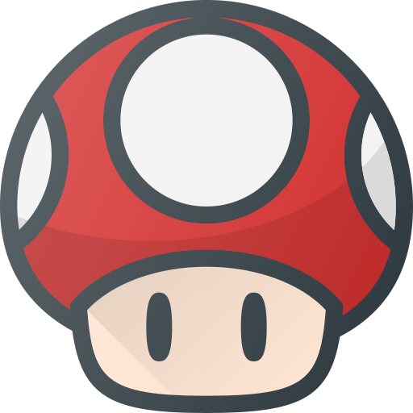

Axolotl Games presenta Yoli
Conoce el divertido videojuego que evoluciona la experiencia de conectar y aprender de la cultura mas grande de todo Mexico!. Adentrate con nosotros y conoce nuestra propuesta.
Yoli Los Huesos de la Creación
Narrando la historia de la creacion del mundo! Seguiremos la historia de Quetzalcuatl bajando al mictlan para robar lo huesos de los antiguos humanos y crear la chispa de la vida, pasando por los 9 circulos del mictlan desde el cendero de flores y su entrada al rio hasta el circulo final donde enfrentara a los 2 señores de la muerte Mictlantecuhtli y Mictecacihuatl.
Conoce los personajes
Diviertete mientras exploras todos los personajes del juego conoce los enemigos que encontraras en tu camino al mictlan.

Personajes
Mecanicas
Items
Productos